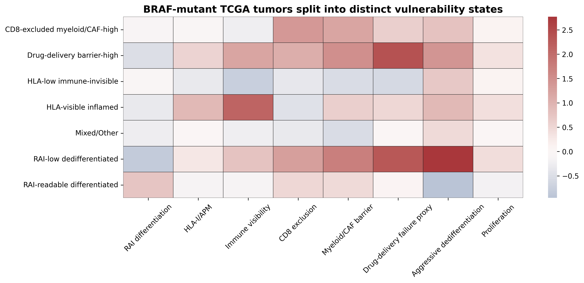
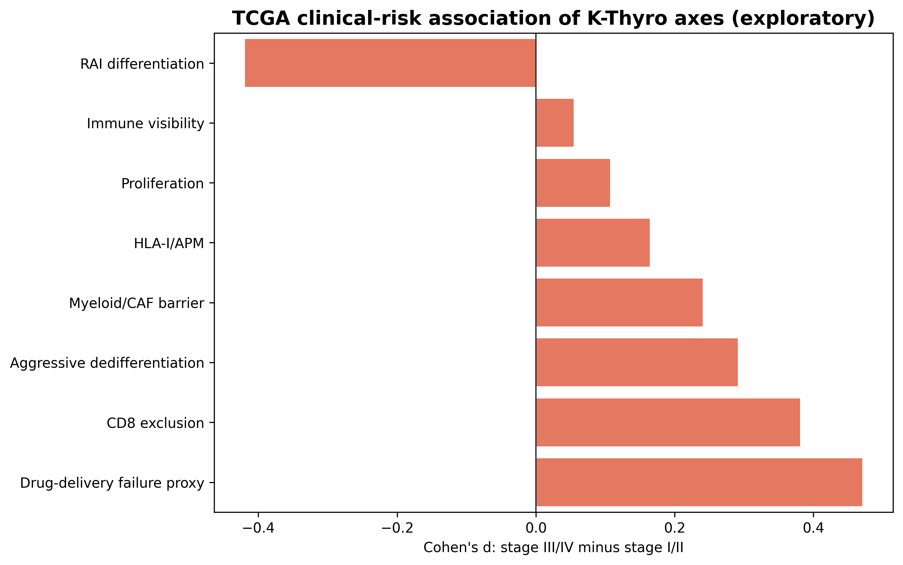
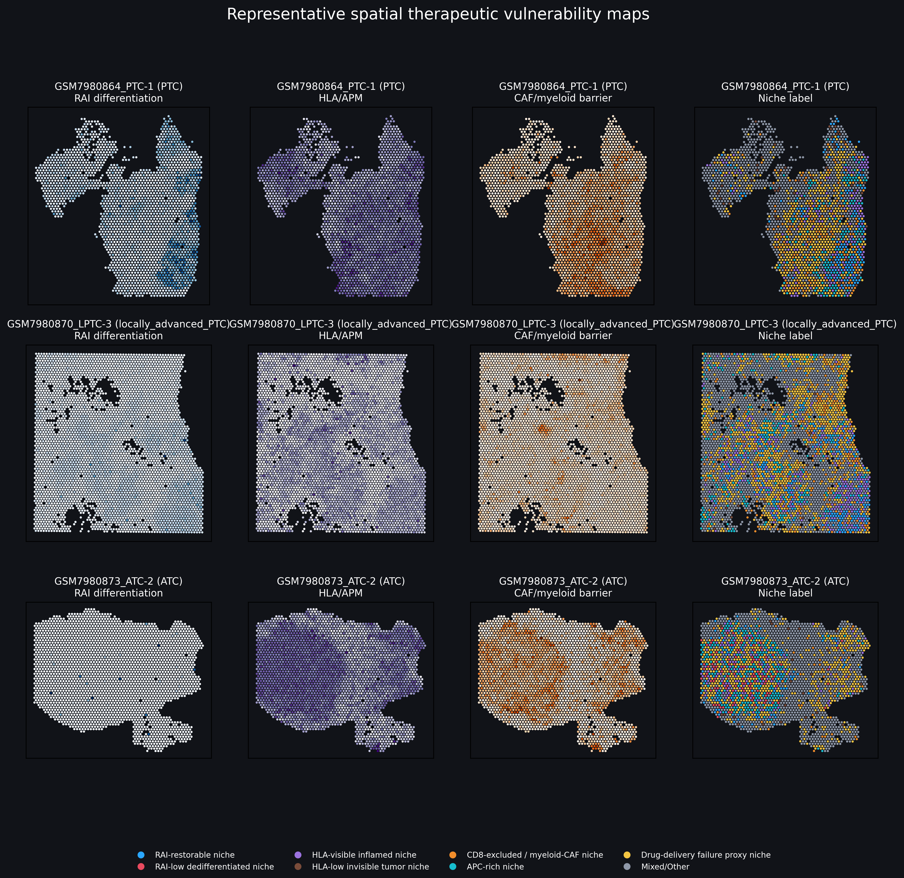
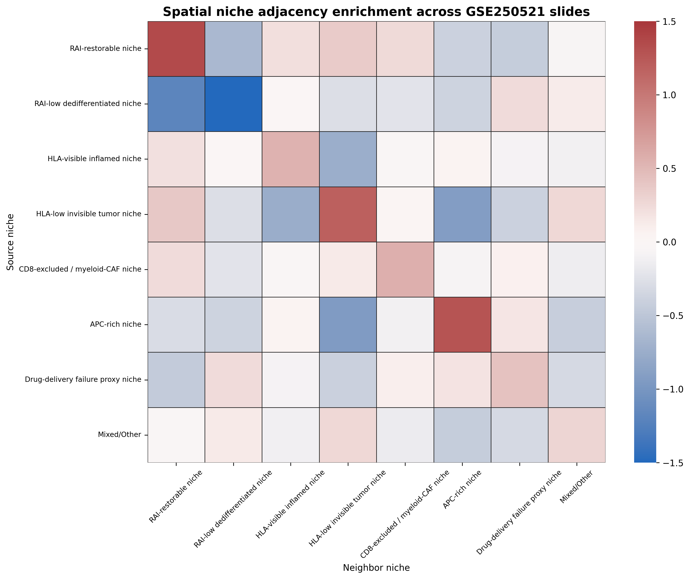
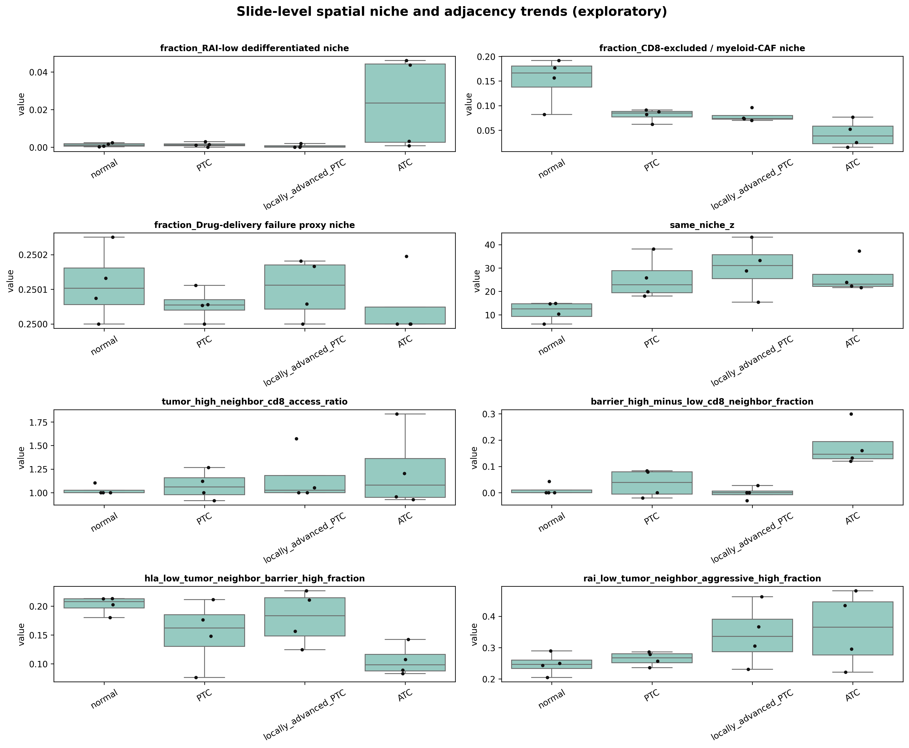
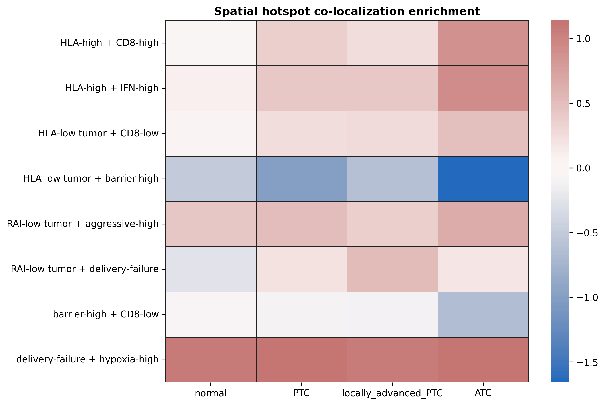
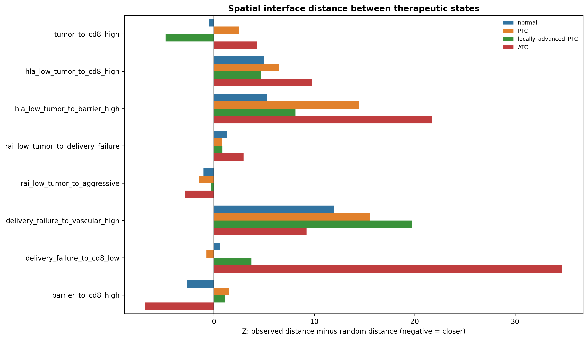
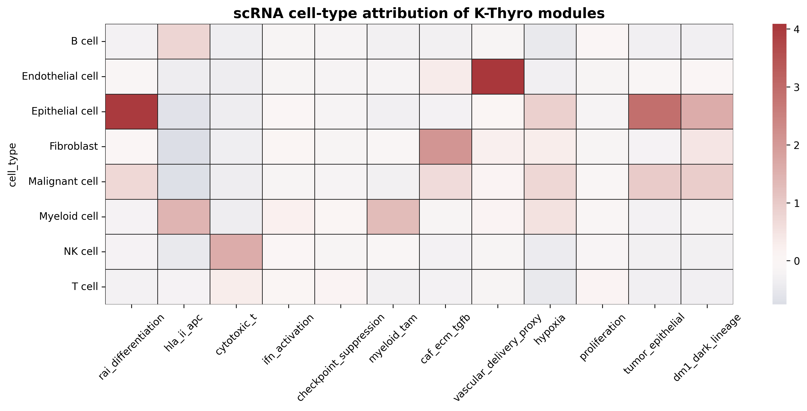
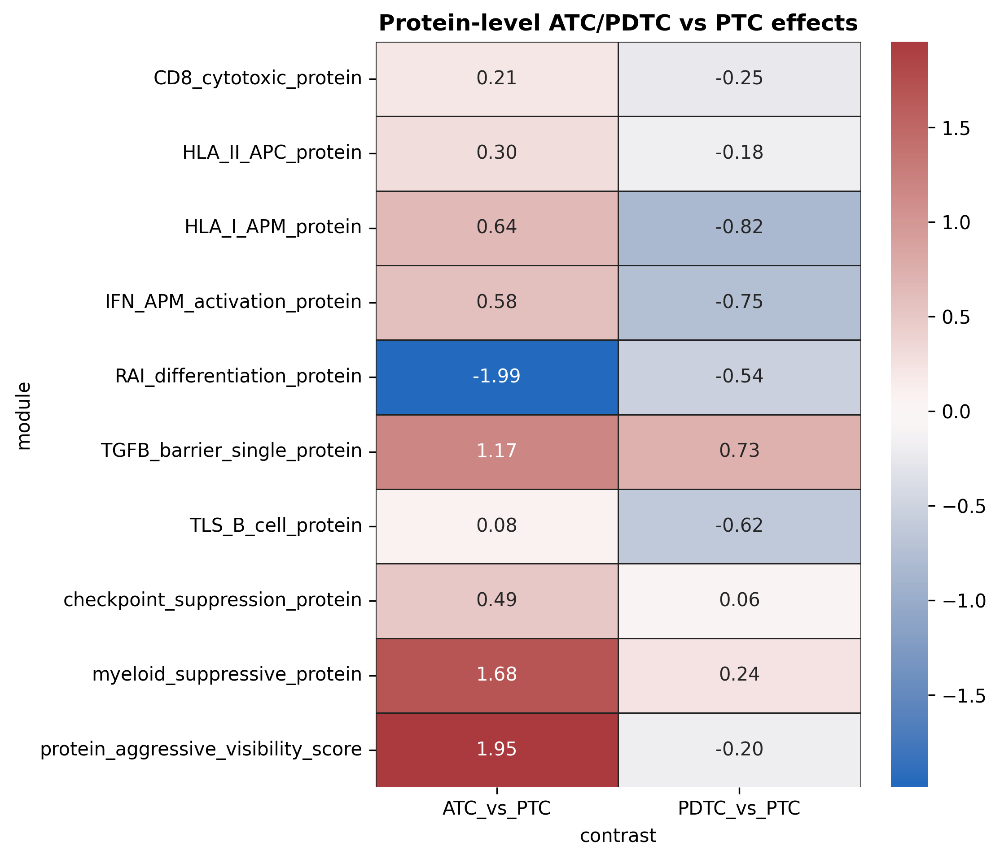
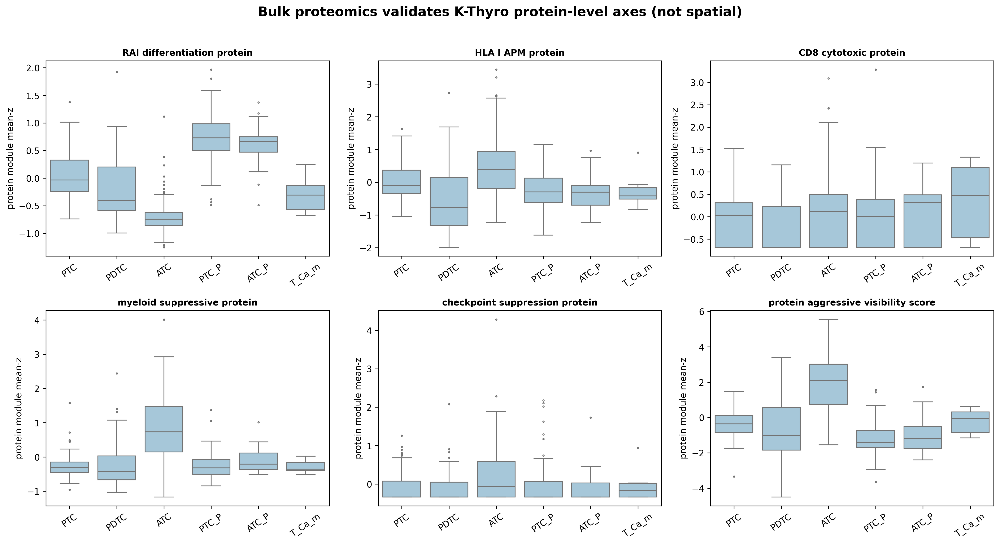

{kind=link}
01Visual First
CV2 contact sheets and figure-first overview
CV2 storyboard: all no-Yu-data in silico panels
Use this first for visual QC and manuscript flow.
CV2 decision board
{kind=link}
Keep this in front of the team: what is publishable now, what is not.
Claim ladder
{kind=link}
Defines the allowed claim envelope without patient-level CTC data.
Public data layer map
{kind=link}
TCGA, scRNA, spatial, proteomics, Yu literature, and future hospital cohort.
Publishability decision

Framework paper yes; transition discovery and residual-risk prediction no.
CTC-EMT-NGS prior panel

Final marker/genetic map to test later with serial blood.
02Publishability
Ruthless decision: what can be written today
Go now
Public-data framework/prior-map paper. The manuscript can argue that public tissue, spatial, single-cell, and proteomic layers define a conservative CTC-EMT-NGS interpretation framework for a future thyroidectomy perturbation cohort.
Do not claim
No new postoperative CTC-EMT transition, no recurrence prediction, no clinical diagnostic, and no proof that public tissue states are CTC origin.
| paper_type | verdict | scope | note |
|---|---|---|---|
| Public-data framework paper | YES_NOW | state-prior map for CTC-EMT monitoring | strongest no-Yu manuscript unit |
| Computational methods note | YES_NOW | reproducible marker/claim-boundary framework | lower impact but fast |
| Samsung preliminary-data paper | YES_NOW | proposal-support manuscript/preprint | not a clinical paper |
| CTC transition biology paper | NO_WITHOUT_YU | needs serial CTC raw counts/subtypes | cannot claim new postoperative transition |
| Residual-risk prediction paper | NO_WITHOUT_FOLLOWUP | needs Tg/US/recurrence and validation | forbidden now |
03Evidence Matrix
All in silico layers with allowed and forbidden claims
| data_layer | input | observed_support | allowed_claim | forbidden_claim |
|---|---|---|---|---|
| Yu 2024 literature | 62 prospective PTC; T0/T1/T2 CTC | CTC-EMT serial measurement is feasible | use as published feasibility anchor | cannot claim our cohort reproduces it |
| TCGA-THCA bulk | 274 BRAF-mutant tumors; 505 total pilot context | BRAF splits across 7 labels; largest 33.2% | driver mutation alone is insufficient for state biology | no CTC, no post-op blood |
| TCGA variance models | driver-only descriptive models | driver group explains only partial axis variance | need phenotype + genotype integration | no causal driver claim |
| GSE250521 spatial | 16 slides; 57144 spots | 16/16 slides same-niche z>2 | tissue-state organization and ROI logic | not CTC origin proof |
| PTC scRNA | 12 marker modules scored | module attribution matches expected cell types | marker/cell-context rationale | not a circulating-cell dataset |
| Bulk proteomics | 461 thyroid proteomics samples in local proxy | RAI protein loss and myeloid/TGFB protein gain in ATC vs PTC | orthogonal protein directionality | not spatial protein localization |
| No Yu raw data | absent | cannot test actual postoperative CTC transition | frame as framework/prior-map paper | no recurrence prediction, no new CTC transition result |
04TCGA State Genetics
Mutation alone is not enough; this supports genetic-state mapping, not CTC biology
BRAF-mutant PTC state split

BRAF-mutant tumors distribute across multiple tissue-state labels.
Driver-only variance boundary

Driver categories explain only part of state-axis variance.
Source: BRAF-only vulnerability heatmap
{kind=link}

Existing public-pilot figure.
Clinical-risk exploratory associations
{kind=link}

Exploratory only; not outcome prediction.
BRAF label distribution
| primary_vulnerability_label | n | fraction_of_braf | claim_boundary |
|---|---|---|---|
| CD8-excluded myeloid/CAF-high | 34 | 0.124 | BRAF-only heterogeneity; mutation status is not dismissed, but it is insufficient to determine vulnerability state. |
| Drug-delivery barrier-high | 91 | 0.332 | BRAF-only heterogeneity; mutation status is not dismissed, but it is insufficient to determine vulnerability state. |
| HLA-low immune-invisible | 18 | 0.0657 | BRAF-only heterogeneity; mutation status is not dismissed, but it is insufficient to determine vulnerability state. |
| HLA-visible inflamed | 19 | 0.0693 | BRAF-only heterogeneity; mutation status is not dismissed, but it is insufficient to determine vulnerability state. |
| Mixed/Other | 85 | 0.31 | BRAF-only heterogeneity; mutation status is not dismissed, but it is insufficient to determine vulnerability state. |
| RAI-low dedifferentiated | 18 | 0.0657 | BRAF-only heterogeneity; mutation status is not dismissed, but it is insufficient to determine vulnerability state. |
| RAI-readable differentiated | 9 | 0.0328 | BRAF-only heterogeneity; mutation status is not dismissed, but it is insufficient to determine vulnerability state. |
Driver-only variance model
| axis_label | model | r_squared_pct | unexplained_pct | claim_boundary |
|---|---|---|---|---|
| RAI differentiation | driver_only | 30.9 | 69.1 | Descriptive variance check; omitted fusions, CNV, methylation, purity, and treatment variables may contribute. |
| HLA-I/APM | driver_only | 15.6 | 84.4 | Descriptive variance check; omitted fusions, CNV, methylation, purity, and treatment variables may contribute. |
| Immune visibility | driver_only | 12.5 | 87.5 | Descriptive variance check; omitted fusions, CNV, methylation, purity, and treatment variables may contribute. |
| CD8 exclusion | driver_only | 16.2 | 83.8 | Descriptive variance check; omitted fusions, CNV, methylation, purity, and treatment variables may contribute. |
| Myeloid/CAF barrier | driver_only | 18.2 | 81.8 | Descriptive variance check; omitted fusions, CNV, methylation, purity, and treatment variables may contribute. |
| Drug-delivery failure | driver_only | 33.2 | 66.8 | Descriptive variance check; omitted fusions, CNV, methylation, purity, and treatment variables may contribute. |
| Aggressive dediff. | driver_only | 27.3 | 72.7 | Descriptive variance check; omitted fusions, CNV, methylation, purity, and treatment variables may contribute. |
| Proliferation | driver_only | 10.7 | 89.3 | Descriptive variance check; omitted fusions, CNV, methylation, purity, and treatment variables may contribute. |
Clinical axis associations, strongest rows
| endpoint | axis | axis_label | n_high_or_event | n_low_or_nonevent | effect_cohens_d_high_minus_low | spearman_stage_rho | spearman_p | mannwhitney_p | claim_boundary | fdr_q_mannwhitney | fdr_q_spearman |
|---|---|---|---|---|---|---|---|---|---|---|---|
| stage_III_IV_vs_I_II | drug_delivery_failure_proxy | Drug-delivery failure proxy | 166 | 336 | 0.471 | 0.139 | 0.00179 | 2.98e-06 | Exploratory TCGA clinical association; not a validated prognostic or predictive biomarker. | 2.39e-05 | 0.00519 |
| stage_III_IV_vs_I_II | rai_differentiation_score | RAI differentiation | 166 | 336 | -0.419 | -0.16 | 0.000308 | 6.76e-06 | Exploratory TCGA clinical association; not a validated prognostic or predictive biomarker. | 2.7e-05 | 0.00247 |
| stage_III_IV_vs_I_II | cd8_exclusion_proxy | CD8 exclusion | 166 | 336 | 0.381 | 0.138 | 0.00195 | 0.000198 | Exploratory TCGA clinical association; not a validated prognostic or predictive biomarker. | 0.000528 | 0.00519 |
| stage_III_IV_vs_I_II | aggressive_dedifferentiation_score | Aggressive dedifferentiation | 166 | 336 | 0.291 | 0.0583 | 0.192 | 0.00778 | Exploratory TCGA clinical association; not a validated prognostic or predictive biomarker. | 0.0156 | 0.384 |
| stage_III_IV_vs_I_II | myeloid_caf_barrier_score | Myeloid/CAF barrier | 166 | 336 | 0.241 | 0.0504 | 0.26 | 0.0153 | Exploratory TCGA clinical association; not a validated prognostic or predictive biomarker. | 0.0245 | 0.416 |
| stage_III_IV_vs_I_II | hla_i_apm_score | HLA-I/APM | 166 | 336 | 0.164 | 0.0285 | 0.524 | 0.0252 | Exploratory TCGA clinical association; not a validated prognostic or predictive biomarker. | 0.0337 | 0.699 |
| stage_III_IV_vs_I_II | immune_visibility_score | Immune visibility | 166 | 336 | 0.0542 | -0.0159 | 0.722 | 0.157 | Exploratory TCGA clinical association; not a validated prognostic or predictive biomarker. | 0.179 | 0.825 |
| stage_III_IV_vs_I_II | proliferation_score | Proliferation | 166 | 336 | 0.107 | -0.00143 | 0.975 | 0.184 | Exploratory TCGA clinical association; not a validated prognostic or predictive biomarker. | 0.184 | 0.975 |
| tumor_present_vs_tumor_free_status | rai_differentiation_score | RAI differentiation | 493 | 1 | Exploratory TCGA clinical association; tumor status fields are heterogeneous. | ||||||
| tumor_present_vs_tumor_free_status | hla_i_apm_score | HLA-I/APM | 493 | 1 | Exploratory TCGA clinical association; tumor status fields are heterogeneous. |
Survival exploratory table
| endpoint | axis | axis_label | n | n_events | cox_hr_per_sd | cox_p | median_split_logrank_p | claim_boundary | cox_fdr_q | logrank_fdr_q |
|---|---|---|---|---|---|---|---|---|---|---|
| PFI | rai_differentiation_score | RAI differentiation | 504 | 52 | 0.799 | 0.0555 | 0.00708 | Exploratory survival association only; not validated and not treatment-predictive. | 0.222 | 0.113 |
| PFI | hla_i_apm_score | HLA-I/APM | 504 | 52 | 1.09 | 0.554 | 0.239 | Exploratory survival association only; not validated and not treatment-predictive. | 0.806 | 0.765 |
| PFI | immune_visibility_score | Immune visibility | 504 | 52 | 1.04 | 0.804 | 0.914 | Exploratory survival association only; not validated and not treatment-predictive. | 0.919 | 0.914 |
| PFI | cd8_exclusion_proxy | CD8 exclusion | 504 | 52 | 1.07 | 0.642 | 0.724 | Exploratory survival association only; not validated and not treatment-predictive. | 0.856 | 0.825 |
| PFI | myeloid_caf_barrier_score | Myeloid/CAF barrier | 504 | 52 | 0.995 | 0.972 | 0.498 | Exploratory survival association only; not validated and not treatment-predictive. | 0.972 | 0.814 |
| PFI | drug_delivery_failure_proxy | Drug-delivery failure proxy | 504 | 52 | 1.27 | 0.0936 | 0.122 | Exploratory survival association only; not validated and not treatment-predictive. | 0.224 | 0.489 |
| PFI | aggressive_dedifferentiation_score | Aggressive dedifferentiation | 504 | 52 | 1.23 | 0.172 | 0.0339 | Exploratory survival association only; not validated and not treatment-predictive. | 0.333 | 0.181 |
| PFI | proliferation_score | Proliferation | 504 | 52 | 1.51 | 0.00273 | 0.0142 | Exploratory survival association only; not validated and not treatment-predictive. | 0.0436 | 0.114 |
| OS | rai_differentiation_score | RAI differentiation | 504 | 16 | 1.03 | 0.887 | 0.681 | Exploratory survival association only; not validated and not treatment-predictive. | 0.946 | 0.825 |
| OS | hla_i_apm_score | HLA-I/APM | 504 | 16 | 0.577 | 0.055 | 0.352 | Exploratory survival association only; not validated and not treatment-predictive. | 0.222 | 0.814 |
05Spatial Organization
Spatial data nominate ROI and tissue context; they do not prove CTC shedding
Same-niche coherence

16/16 slides have z>2; median z=22.00.
Representative spatial maps
{kind=link}

Spatial tissue-state visual layer from public pilot.
Niche adjacency enrichment
{kind=link}

Spot-neighborhood proxy; ROI nomination only.
Condition and adjacency trends
{kind=link}

Exploratory slide-level trend; n=4 per condition.
Hotspot colocalization
{kind=link}

Co-localization support for tissue-state organization.
Interface distance
{kind=link}

Spatial interface proxy; not biological replication.
Spatial coherence table
| sample_id | condition | label_set | observed | null_mean | z | empirical_p |
|---|---|---|---|---|---|---|
| GSM7980860_N-1 | normal | niche_label | 0.28 | 0.224 | 14.7 | 0.002 |
| GSM7980861_N-2 | normal | niche_label | 0.357 | 0.301 | 14.9 | 0.002 |
| GSM7980862_N-3 | normal | niche_label | 0.265 | 0.228 | 10.3 | 0.002 |
| GSM7980863_N-4 | normal | niche_label | 0.245 | 0.219 | 6.09 | 0.002 |
| GSM7980864_PTC-1 | PTC | niche_label | 0.452 | 0.278 | 38.1 | 0.002 |
| GSM7980865_PTC-2 | PTC | niche_label | 0.336 | 0.272 | 19.9 | 0.002 |
| GSM7980866_PTC-3 | PTC | niche_label | 0.321 | 0.237 | 25.8 | 0.002 |
| GSM7980867_PTC-4 | PTC | niche_label | 0.334 | 0.275 | 18 | 0.002 |
| GSM7980868_LPTC-1 | locally_advanced_PTC | niche_label | 0.38 | 0.294 | 15.4 | 0.002 |
| GSM7980869_LPTC-2 | locally_advanced_PTC | niche_label | 0.346 | 0.233 | 33.2 | 0.002 |
| GSM7980870_LPTC-3 | locally_advanced_PTC | niche_label | 0.452 | 0.311 | 43.2 | 0.002 |
| GSM7980871_LPTC-4 | locally_advanced_PTC | niche_label | 0.343 | 0.249 | 28.8 | 0.002 |
| GSM7980872_ATC-1 | ATC | niche_label | 0.371 | 0.293 | 23.9 | 0.002 |
| GSM7980873_ATC-2 | ATC | niche_label | 0.482 | 0.323 | 37.3 | 0.002 |
| GSM7980874_ATC-3 | ATC | niche_label | 0.353 | 0.239 | 21.6 | 0.002 |
| GSM7980875_ATC-4 | ATC | niche_label | 0.374 | 0.275 | 22.4 | 0.002 |
Adjacency enrichment
| sample_id | condition | source_niche | neighbor_niche | observed_edges | source_edges | observed_neighbor_fraction | expected_slide_label_fraction | log2_enrichment_proxy | binomial_z_proxy_not_independent | claim_boundary |
|---|---|---|---|---|---|---|---|---|---|---|
| GSM7980862_N-3 | normal | RAI-restorable niche | RAI-restorable niche | 2 | 42 | 0.0476 | 0.00156 | 4.94 | 7.57 | Proxy adjacency enrichment; spots are not independent biological replicates and p-values are not claimed. |
| GSM7980862_N-3 | normal | RAI-restorable niche | HLA-low invisible tumor niche | 1 | 42 | 0.0238 | 0.002 | 3.57 | 3.16 | Proxy adjacency enrichment; spots are not independent biological replicates and p-values are not claimed. |
| GSM7980862_N-3 | normal | HLA-low invisible tumor niche | RAI-restorable niche | 1 | 54 | 0.0185 | 0.00156 | 3.57 | 3.16 | Proxy adjacency enrichment; spots are not independent biological replicates and p-values are not claimed. |
| GSM7980860_N-1 | normal | RAI-restorable niche | RAI-restorable niche | 27 | 228 | 0.118 | 0.0113 | 3.39 | 15.3 | Proxy adjacency enrichment; spots are not independent biological replicates and p-values are not claimed. |
| GSM7980872_ATC-1 | ATC | RAI-low dedifferentiated niche | RAI-low dedifferentiated niche | 2 | 90 | 0.0222 | 0.00321 | 2.79 | 3.19 | Proxy adjacency enrichment; spots are not independent biological replicates and p-values are not claimed. |
| GSM7980863_N-4 | normal | RAI-low dedifferentiated niche | HLA-low invisible tumor niche | 1 | 30 | 0.0333 | 0.00667 | 2.32 | 1.79 | Proxy adjacency enrichment; spots are not independent biological replicates and p-values are not claimed. |
| GSM7980863_N-4 | normal | HLA-low invisible tumor niche | RAI-low dedifferentiated niche | 1 | 120 | 0.00833 | 0.00167 | 2.32 | 1.79 | Proxy adjacency enrichment; spots are not independent biological replicates and p-values are not claimed. |
| GSM7980864_PTC-1 | PTC | RAI-restorable niche | RAI-restorable niche | 265 | 870 | 0.305 | 0.0646 | 2.24 | 28.8 | Proxy adjacency enrichment; spots are not independent biological replicates and p-values are not claimed. |
| GSM7980870_LPTC-3 | locally_advanced_PTC | RAI-restorable niche | RAI-restorable niche | 307 | 1,428 | 0.215 | 0.0546 | 1.98 | 26.7 | Proxy adjacency enrichment; spots are not independent biological replicates and p-values are not claimed. |
| GSM7980864_PTC-1 | PTC | APC-rich niche | APC-rich niche | 238 | 930 | 0.256 | 0.0691 | 1.89 | 22.5 | Proxy adjacency enrichment; spots are not independent biological replicates and p-values are not claimed. |
| GSM7980869_LPTC-2 | locally_advanced_PTC | RAI-restorable niche | RAI-restorable niche | 584 | 1,986 | 0.294 | 0.0802 | 1.88 | 35.1 | Proxy adjacency enrichment; spots are not independent biological replicates and p-values are not claimed. |
| GSM7980865_PTC-2 | PTC | HLA-low invisible tumor niche | HLA-low invisible tumor niche | 58 | 696 | 0.0833 | 0.0237 | 1.81 | 10.3 | Proxy adjacency enrichment; spots are not independent biological replicates and p-values are not claimed. |
| GSM7980864_PTC-1 | PTC | HLA-visible inflamed niche | HLA-visible inflamed niche | 234 | 960 | 0.244 | 0.0713 | 1.77 | 20.8 | Proxy adjacency enrichment; spots are not independent biological replicates and p-values are not claimed. |
| GSM7980873_ATC-2 | ATC | HLA-low invisible tumor niche | HLA-low invisible tumor niche | 4 | 138 | 0.029 | 0.00866 | 1.74 | 2.58 | Proxy adjacency enrichment; spots are not independent biological replicates and p-values are not claimed. |
Hotspot colocalization
| sample_id | condition | hotspot | mask_a | mask_b | n_spots | n_a | n_b | n_overlap | expected_overlap_independence | overlap_fraction_of_slide | jaccard | log2_overlap_enrichment | hypergeom_p_enrichment_spot_level_proxy | claim_boundary | hypergeom_fdr_q_spot_level_proxy |
|---|---|---|---|---|---|---|---|---|---|---|---|---|---|---|---|
| GSM7980860_N-1 | normal | HLA-low tumor + barrier-high | hla_low_tumor | barrier_high | 3,363 | 110 | 841 | 20 | 27.5 | 0.00595 | 0.0215 | -0.45 | 0.967 | Spot-level co-localization proxy; spatial autocorrelation means p-values are descriptive, not biological replicate inference. | 1 |
| GSM7980860_N-1 | normal | HLA-low tumor + CD8-low | hla_low_tumor | cd8_low | 3,363 | 110 | 2,988 | 102 | 97.7 | 0.0303 | 0.034 | 0.0613 | 0.12 | Spot-level co-localization proxy; spatial autocorrelation means p-values are descriptive, not biological replicate inference. | 0.222 |
| GSM7980860_N-1 | normal | RAI-low tumor + delivery-failure | rai_low_tumor | delivery_high | 3,363 | 42 | 841 | 12 | 10.5 | 0.00357 | 0.0138 | 0.184 | 0.351 | Spot-level co-localization proxy; spatial autocorrelation means p-values are descriptive, not biological replicate inference. | 0.569 |
| GSM7980860_N-1 | normal | RAI-low tumor + aggressive-high | rai_low_tumor | aggressive_high | 3,363 | 42 | 841 | 14 | 10.5 | 0.00416 | 0.0161 | 0.398 | 0.142 | Spot-level co-localization proxy; spatial autocorrelation means p-values are descriptive, not biological replicate inference. | 0.256 |
| GSM7980860_N-1 | normal | delivery-failure + hypoxia-high | delivery_high | hypoxia_high | 3,363 | 841 | 841 | 427 | 210 | 0.127 | 0.34 | 1.02 | 2.51e-81 | Spot-level co-localization proxy; spatial autocorrelation means p-values are descriptive, not biological replicate inference. | 2.47e-80 |
| GSM7980860_N-1 | normal | barrier-high + CD8-low | barrier_high | cd8_low | 3,363 | 841 | 2,988 | 725 | 747 | 0.216 | 0.234 | -0.0435 | 0.998 | Spot-level co-localization proxy; spatial autocorrelation means p-values are descriptive, not biological replicate inference. | 1 |
| GSM7980860_N-1 | normal | HLA-high + CD8-high | hla_high | cd8_high | 3,363 | 841 | 3,363 | 841 | 841 | 0.25 | 0.25 | 0 | 1 | Spot-level co-localization proxy; spatial autocorrelation means p-values are descriptive, not biological replicate inference. | 1 |
| GSM7980860_N-1 | normal | HLA-high + IFN-high | hla_high | ifn_high | 3,363 | 841 | 3,363 | 841 | 841 | 0.25 | 0.25 | 0 | 1 | Spot-level co-localization proxy; spatial autocorrelation means p-values are descriptive, not biological replicate inference. | 1 |
| GSM7980861_N-2 | normal | HLA-low tumor + barrier-high | hla_low_tumor | barrier_high | 3,798 | 140 | 950 | 24 | 35 | 0.00632 | 0.0225 | -0.536 | 0.991 | Spot-level co-localization proxy; spatial autocorrelation means p-values are descriptive, not biological replicate inference. | 1 |
| GSM7980861_N-2 | normal | HLA-low tumor + CD8-low | hla_low_tumor | cd8_low | 3,798 | 140 | 2,818 | 107 | 104 | 0.0282 | 0.0375 | 0.0426 | 0.307 | Spot-level co-localization proxy; spatial autocorrelation means p-values are descriptive, not biological replicate inference. | 0.516 |
| GSM7980861_N-2 | normal | RAI-low tumor + delivery-failure | rai_low_tumor | delivery_high | 3,798 | 48 | 950 | 7 | 12 | 0.00184 | 0.00706 | -0.738 | 0.974 | Spot-level co-localization proxy; spatial autocorrelation means p-values are descriptive, not biological replicate inference. | 1 |
| GSM7980861_N-2 | normal | RAI-low tumor + aggressive-high | rai_low_tumor | aggressive_high | 3,798 | 48 | 950 | 16 | 12 | 0.00421 | 0.0163 | 0.4 | 0.122 | Spot-level co-localization proxy; spatial autocorrelation means p-values are descriptive, not biological replicate inference. | 0.223 |
Interface distance tests
| sample_id | condition | metric | source_mask | target_mask | n_source | n_target | observed_mean_nearest_distance_px | null_mean_distance_px | distance_delta_observed_minus_null | distance_z_observed_minus_null | empirical_p_closer_than_random | claim_boundary | empirical_fdr_q_closer |
|---|---|---|---|---|---|---|---|---|---|---|---|---|---|
| GSM7980860_N-1 | normal | tumor_to_cd8_high | tumor_high | cd8_high | 841 | 3,363 | 0 | 0 | 0 | 1 | Nearest-distance proxy using spot coordinates; use as ROI/interface hypothesis, not mechanistic exclusion proof. | 1 | |
| GSM7980860_N-1 | normal | hla_low_tumor_to_cd8_high | hla_low_tumor | cd8_high | 110 | 3,363 | 0 | 0 | 0 | 1 | Nearest-distance proxy using spot coordinates; use as ROI/interface hypothesis, not mechanistic exclusion proof. | 1 | |
| GSM7980860_N-1 | normal | hla_low_tumor_to_barrier_high | hla_low_tumor | barrier_high | 110 | 841 | 231 | 179 | 52.4 | 5.35 | 1 | Nearest-distance proxy using spot coordinates; use as ROI/interface hypothesis, not mechanistic exclusion proof. | 1 |
| GSM7980860_N-1 | normal | rai_low_tumor_to_delivery_failure | rai_low_tumor | delivery_high | 42 | 841 | 188 | 178 | 10.1 | 0.494 | 0.724 | Nearest-distance proxy using spot coordinates; use as ROI/interface hypothesis, not mechanistic exclusion proof. | 1 |
| GSM7980860_N-1 | normal | rai_low_tumor_to_aggressive | rai_low_tumor | aggressive_high | 42 | 841 | 164 | 180 | -16.5 | -0.844 | 0.184 | Nearest-distance proxy using spot coordinates; use as ROI/interface hypothesis, not mechanistic exclusion proof. | 0.873 |
| GSM7980860_N-1 | normal | delivery_failure_to_vascular_high | delivery_high | vascular_high | 841 | 841 | 239 | 176 | 63.4 | 14.9 | 1 | Nearest-distance proxy using spot coordinates; use as ROI/interface hypothesis, not mechanistic exclusion proof. | 1 |
| GSM7980860_N-1 | normal | delivery_failure_to_cd8_low | delivery_high | cd8_low | 841 | 2,988 | 21.4 | 22.1 | -0.702 | -0.357 | 0.421 | Nearest-distance proxy using spot coordinates; use as ROI/interface hypothesis, not mechanistic exclusion proof. | 1 |
| GSM7980860_N-1 | normal | barrier_to_cd8_high | barrier_high | cd8_high | 841 | 3,363 | 0 | 0 | 0 | 1 | Nearest-distance proxy using spot coordinates; use as ROI/interface hypothesis, not mechanistic exclusion proof. | 1 | |
| GSM7980861_N-2 | normal | tumor_to_cd8_high | tumor_high | cd8_high | 950 | 950 | 38.7 | 39.1 | -0.434 | -0.512 | 0.342 | Nearest-distance proxy using spot coordinates; use as ROI/interface hypothesis, not mechanistic exclusion proof. | 1 |
| GSM7980861_N-2 | normal | hla_low_tumor_to_cd8_high | hla_low_tumor | cd8_high | 140 | 950 | 49.3 | 39.4 | 9.85 | 5.02 | 1 | Nearest-distance proxy using spot coordinates; use as ROI/interface hypothesis, not mechanistic exclusion proof. | 1 |
| GSM7980861_N-2 | normal | hla_low_tumor_to_barrier_high | hla_low_tumor | barrier_high | 140 | 950 | 52 | 39 | 12.9 | 5.89 | 1 | Nearest-distance proxy using spot coordinates; use as ROI/interface hypothesis, not mechanistic exclusion proof. | 1 |
| GSM7980861_N-2 | normal | rai_low_tumor_to_delivery_failure | rai_low_tumor | delivery_high | 48 | 950 | 48.6 | 40.4 | 8.16 | 1.89 | 0.961 | Nearest-distance proxy using spot coordinates; use as ROI/interface hypothesis, not mechanistic exclusion proof. | 1 |
06Single-Cell Context
Marker-cell context for panel rationale; not CTC data
scRNA marker context

Top cell type attribution for marker modules.
Source: scRNA attribution heatmap
{kind=link}

Existing public-pilot figure.
| module | top_cell_type | top_mean_score | second_cell_type | second_mean_score | top_minus_second | n_cells_top | status | claim_boundary |
|---|---|---|---|---|---|---|---|---|
| rai_differentiation_score | Epithelial cell | 3.99 | Malignant cell | 0.718 | 3.27 | 706 | scored | scRNA cell-type attribution supports marker context; it does not deconvolve Visium spots or prove tumor-cell intrinsic expression. |
| hla_ii_apc_score | Myeloid cell | 1.44 | B cell | 0.786 | 0.653 | 12,176 | scored | scRNA cell-type attribution supports marker context; it does not deconvolve Visium spots or prove tumor-cell intrinsic expression. |
| cytotoxic_t_score | NK cell | 1.63 | T cell | 0.303 | 1.32 | 1,858 | scored | scRNA cell-type attribution supports marker context; it does not deconvolve Visium spots or prove tumor-cell intrinsic expression. |
| ifn_activation_score | Myeloid cell | 0.197 | Fibroblast | 0.0507 | 0.146 | 12,176 | scored | scRNA cell-type attribution supports marker context; it does not deconvolve Visium spots or prove tumor-cell intrinsic expression. |
| checkpoint_suppression_score | T cell | 0.124 | Myeloid cell | 0.0403 | 0.0839 | 32,929 | scored | scRNA cell-type attribution supports marker context; it does not deconvolve Visium spots or prove tumor-cell intrinsic expression. |
| myeloid_tam_score | Myeloid cell | 1.3 | Fibroblast | -0.0787 | 1.37 | 12,176 | scored | scRNA cell-type attribution supports marker context; it does not deconvolve Visium spots or prove tumor-cell intrinsic expression. |
| caf_ecm_tgfb_score | Fibroblast | 2.09 | Malignant cell | 0.677 | 1.41 | 1,002 | scored | scRNA cell-type attribution supports marker context; it does not deconvolve Visium spots or prove tumor-cell intrinsic expression. |
| vascular_delivery_proxy_score | Endothelial cell | 4.09 | Fibroblast | 0.255 | 3.83 | 803 | scored | scRNA cell-type attribution supports marker context; it does not deconvolve Visium spots or prove tumor-cell intrinsic expression. |
| hypoxia_score | Epithelial cell | 0.889 | Malignant cell | 0.77 | 0.119 | 706 | scored | scRNA cell-type attribution supports marker context; it does not deconvolve Visium spots or prove tumor-cell intrinsic expression. |
| proliferation_score | T cell | 0.106 | B cell | 0.000703 | 0.105 | 32,929 | scored | scRNA cell-type attribution supports marker context; it does not deconvolve Visium spots or prove tumor-cell intrinsic expression. |
| tumor_epithelial_score | Epithelial cell | 2.92 | Malignant cell | 0.976 | 1.95 | 706 | scored | scRNA cell-type attribution supports marker context; it does not deconvolve Visium spots or prove tumor-cell intrinsic expression. |
| dm1_dark_lineage_score | Epithelial cell | 1.61 | Malignant cell | 0.932 | 0.675 | 706 | scored | scRNA cell-type attribution supports marker context; it does not deconvolve Visium spots or prove tumor-cell intrinsic expression. |
07Proteomics
Protein directionality supports tissue-state priors; not spatial protein localization
ATC vs PTC protein directionality

RAI loss and myeloid/TGFB gain are the strongest safe messages.
Source: proteomics contrast heatmap
{kind=link}

Bulk proteomics proxy; not spatial.
Source: proteomics axis boxplots
{kind=link}

PTC/PDTC/ATC protein module scores.
ATC vs PTC contrasts
| module | n_group_a | n_group_b | cohens_d_group_a_minus_b | mannwhitney_p | fdr_q | claim_boundary |
|---|---|---|---|---|---|---|
| RAI_differentiation_protein | 113 | 177 | -1.99 | 1.06e-36 | 4.23e-35 | Bulk proteomics contrast validates protein-level directionality, not spatial localization. |
| protein_aggressive_visibility_score | 113 | 177 | 1.95 | 1.01e-28 | 2.02e-27 | Bulk proteomics contrast validates protein-level directionality, not spatial localization. |
| myeloid_suppressive_protein | 113 | 177 | 1.68 | 1.49e-24 | 1.99e-23 | Bulk proteomics contrast validates protein-level directionality, not spatial localization. |
| TGFB_barrier_single_protein | 113 | 177 | 1.17 | 1.81e-20 | 1.81e-19 | Bulk proteomics contrast validates protein-level directionality, not spatial localization. |
| HLA_I_APM_protein | 113 | 177 | 0.643 | 6.22e-06 | 1.91e-05 | Bulk proteomics contrast validates protein-level directionality, not spatial localization. |
| IFN_APM_activation_protein | 113 | 177 | 0.585 | 1.9e-05 | 5.44e-05 | Bulk proteomics contrast validates protein-level directionality, not spatial localization. |
| checkpoint_suppression_protein | 113 | 177 | 0.495 | 0.00975 | 0.0186 | Bulk proteomics contrast validates protein-level directionality, not spatial localization. |
| HLA_II_APC_protein | 113 | 177 | 0.303 | 0.0488 | 0.0698 | Bulk proteomics contrast validates protein-level directionality, not spatial localization. |
| CD8_cytotoxic_protein | 113 | 177 | 0.212 | 0.203 | 0.28 | Bulk proteomics contrast validates protein-level directionality, not spatial localization. |
| TLS_B_cell_protein | 113 | 177 | 0.0786 | 0.879 | 0.902 | Bulk proteomics contrast validates protein-level directionality, not spatial localization. |
Dedifferentiation trends
| module | n_samples | spearman_dediff_order_rho | spearman_p | mean_PTC | mean_PDTC | mean_ATC | claim_boundary | fdr_q |
|---|---|---|---|---|---|---|---|---|
| RAI_differentiation_protein | 461 | -0.42 | 4.01e-21 | 0.0339 | -0.205 | -0.697 | Bulk proteomics dedifferentiation trend; not spatial and not treatment-response proof. | 4.01e-20 |
| myeloid_suppressive_protein | 461 | 0.408 | 6.71e-20 | -0.288 | -0.191 | 0.797 | Bulk proteomics dedifferentiation trend; not spatial and not treatment-response proof. | 3.36e-19 |
| TGFB_barrier_single_protein | 461 | 0.342 | 3.98e-14 | -0.188 | 0.231 | 0.889 | Bulk proteomics dedifferentiation trend; not spatial and not treatment-response proof. | 1.33e-13 |
| protein_aggressive_visibility_score | 461 | 0.323 | 1.12e-12 | -0.317 | -0.534 | 1.97 | Bulk proteomics dedifferentiation trend; not spatial and not treatment-response proof. | 2.79e-12 |
| HLA_I_APM_protein | 461 | 0.0932 | 0.0455 | 0.00422 | -0.548 | 0.473 | Bulk proteomics dedifferentiation trend; not spatial and not treatment-response proof. | 0.0909 |
| checkpoint_suppression_protein | 461 | 0.0861 | 0.0648 | -0.0796 | -0.0581 | 0.18 | Bulk proteomics dedifferentiation trend; not spatial and not treatment-response proof. | 0.108 |
| IFN_APM_activation_protein | 461 | 0.0739 | 0.113 | 0.0684 | -0.392 | 0.44 | Bulk proteomics dedifferentiation trend; not spatial and not treatment-response proof. | 0.162 |
| CD8_cytotoxic_protein | 461 | 0.0594 | 0.203 | -0.0459 | -0.206 | 0.111 | Bulk proteomics dedifferentiation trend; not spatial and not treatment-response proof. | 0.254 |
| TLS_B_cell_protein | 461 | -0.0361 | 0.439 | -0.0221 | -0.308 | 0.0178 | Bulk proteomics dedifferentiation trend; not spatial and not treatment-response proof. | 0.488 |
| HLA_II_APC_protein | 461 | 0.013 | 0.781 | 0.0635 | -0.107 | 0.326 | Bulk proteomics dedifferentiation trend; not spatial and not treatment-response proof. | 0.781 |
08CTC-EMT-NGS Prior Panel
Use as marker rationale now; test with serial blood later
Final marker/genetic prior panel
Tissue-informed marker and clone-anchor modules.
| module | markers | why_include | claim_boundary |
|---|---|---|---|
| Epithelial CTC | EpCAM, KRT8, KRT18, KRT19, CDH1 | capture epithelial tumor-cell identity | Epithelial signal can be lost in EMT; do not use alone |
| Hybrid E/M CTC | EpCAM/KRT + VIM/FN1/SNAI2/ZEB1/TWIST1 | define transition-state candidate | hybrid marker co-expression is phenotype, not viability proof |
| Mesenchymal CTC | VIM, FN1, CDH2, SNAI2, ZEB1, TWIST1 | nominate invasive/EMT-like blood state | not a metastasis claim without clone anchor |
| Thyroid lineage | PAX8, TG, TPO, TSHR, SLC5A5 | separate thyroid-derived signal from nonspecific cells | lineage-low does not equal dedifferentiation unless anchored |
| Survival/stemness | AXL, MET, CD44, ALDH1A1, SOX9 | prioritize persistent post-op CTC hypotheses | exploratory unless prospectively validated |
| Immune/stress | CD274, CD47, HLA-A/B/C, B2M, TAP1/2, CA9, VEGFA | link tissue stress/immune axes to blood interpretation | not immunotherapy response prediction |
| Genetic anchor | BRAF, TERT promoter, RAS, RET/NTRK/ALK fusions, private SNV/CNV/SV | tumor-informed cfDNA/CTC interpretation | low-input CTC NGS may fail |
09Dataset Gap
Why the prospective hospital cohort remains essential
| component | current_public_status | local_status | next_step |
|---|---|---|---|
| serial pre/post thyroidectomy blood | Yu 2024 published summary | no raw patient-level table locally | hospital request |
| CTC E/EM/M phenotype | Yu 2024 literature | no local raw count/subtype data | hospital request |
| matched tissue-normal NGS | not in public serial CTC dataset | missing | new prospective cohort |
| serial cfDNA | fragmented literature only | missing matched serial PTC CTC map | vendor/hospital workflow |
| spatial tissue-state context | GSE250521 and other public data | available as support | use as in silico paper layer |
| bulk driver/state context | TCGA-THCA | available as support | use as in silico paper layer |
| postoperative outcome | not available in integrated public dataset | missing | hospital follow-up |
Critical boundary
Without Prof. Yu's patient-level serial CTC table, we cannot test postoperative E/EM/M transition. The in silico paper should explicitly state this limitation.
10Paper Skeleton
Manuscript-ready outline and claim defense
# Manuscript Skeleton: No-Yu-Data In Silico Framework Paper ## Working title Tissue-State and Genetic Prior Mapping for Post-Thyroidectomy CTC-EMT Monitoring in Papillary Thyroid Cancer ## Abstract claim boundary This study does not analyze patient-level serial CTC data. It builds a public-data tissue-state, spatial, single-cell, and protein-level rationale for a future serial CTC-EMT and NGS study after thyroidectomy. ## Figure plan 1. **Figure 1. Claim ladder and missing dataset map** Shows why the current paper is a framework paper, not CTC discovery. 2. **Figure 2. Public data layer map** TCGA, scRNA, spatial, proteomics, Yu literature, future hospital cohort. 3. **Figure 3. Driver mutation is not enough** BRAF-mutant tumors split across multiple tissue-state labels. 4. **Figure 4. Driver-only variance boundary** Driver group explains only part of state-axis variance. 5. **Figure 5. Spatial tissue-state organization** GSE250521 same-niche coherence supports ROI logic. 6. **Figure 6. Single-cell marker context** Module-cell type attribution supports marker choice. 7. **Figure 7. Protein-level directionality** Bulk thyroid proteomics validates RAI loss and myeloid/TGFB gain direction. 8. **Figure 8. CTC-EMT-NGS prior panel** Final marker and NGS interpretation panel. 9. **Figure 9. Publishability decision** What can be written now versus what needs hospital data. ## Results headings 1. No public dataset contains serial PTC CTC-EMT phenotype, matched tissue NGS, cfDNA/CTC NGS, and postoperative outcome. 2. Driver mutation alone does not define the residual-risk tissue state in PTC. 3. Single-cell thyroid cancer atlases nominate epithelial, partial-EMT, dedifferentiation, stromal, and immune marker modules. 4. Spatial transcriptomics shows non-random organization of tissue-state niches. 5. Bulk proteomics supports protein-level directionality of dedifferentiation and stromal-suppressive axes. 6. These public layers define a conservative CTC-EMT-NGS prior map for prospective thyroidectomy perturbation studies. ## Discussion boundary The paper should end by saying the framework justifies, but does not replace, a prospective serial blood study.
# Claim Boundary Table: No Yu Raw Data | Reviewer attack | Honest answer | Figure/table support | Boundary | |---|---|---|---| | You do not have CTC raw data. | Correct. This is a public-data prior/framework paper, not a CTC transition discovery paper. | F01, dataset gap map | no new CTC transition claim | | Public tissue data cannot prove CTC shedding. | Correct. Tissue data nominates marker/state context only. | F02, F05, evidence matrix | no CTC origin proof | | BRAF heterogeneity is not residual disease. | Correct. It shows mutation alone is insufficient for state interpretation. | F03, F04 | no residual disease claim | | Spatial coherence is not clinical outcome. | Correct. It supports ROI and tissue organization. | F05 | no recurrence prediction | | Proteomics is bulk not spatial. | Correct. It supports protein directionality only. | F07 | no spatial protein localization | | Why publish this? | Because no integrated serial CTC-EMT-NGS dataset exists, so a rigorous prior map is needed before prospective cohort design. | F01, F02, F08, F09 | framework paper only |
11Paths
All generated artifacts and source files
ZIP packetall figures/tables/reports
StoryboardCV2 figure contact sheet
Decision boardpublishability board
Feasibility reportclaim-safe Korean report
Manuscript skeletonpaper outline
Evidence tableallowed/forbidden claims
Marker tableCTC-EMT-NGS prior
Gap mapmissing dataset map
| Local output dir | /home/seungho/personal/THCA_data_analysis/kthyro_ctc_emt_samsung_proposal/outputs/in_silico_paper_no_yu |
|---|---|
| HTML source | /home/seungho/personal/THCA_data_analysis/project/papers_hub_2026_0509/kthyro_no_yu_in_silico_ctc_emt_dossier.html |
| Live HTML | /var/www/papers/papers_hub_2026_0509/kthyro_no_yu_in_silico_ctc_emt_dossier.html |
| Live assets | /var/www/papers/papers_hub_2026_0509/assets/kthyro_no_yu_in_silico |